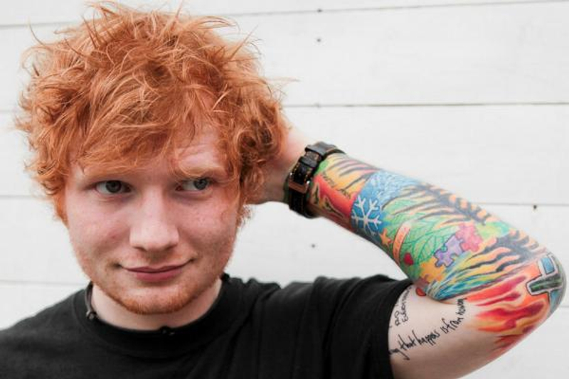

Edward Christopher Sheeran
(紅髮艾克)


是英國創作歌手、音樂製作人及演員。艾德出生於西約克郡哈利法克斯，並在薩福克郡弗瑞林姆長大。18歲時，他曾於吉爾福德當代音樂學院就讀大學。2011年年初，艾德獨立發行了迷你專輯《No. 5 Collaborations Project》。同年，他與庇護所唱片簽約，於2011年9月9日發行了首張錄音室專輯《無限延伸》。專輯在英國獲得了8白金銷售認證，其單曲《A咖一族》獲得了第55屆葛萊美獎年度歌曲提名，並讓艾德贏得了艾弗·諾韋洛獎「最佳詞曲歌曲獎」。2012年，艾德贏得了全英音樂獎「最佳英國獨唱藝人」和「英國最佳突破藝人」獎。